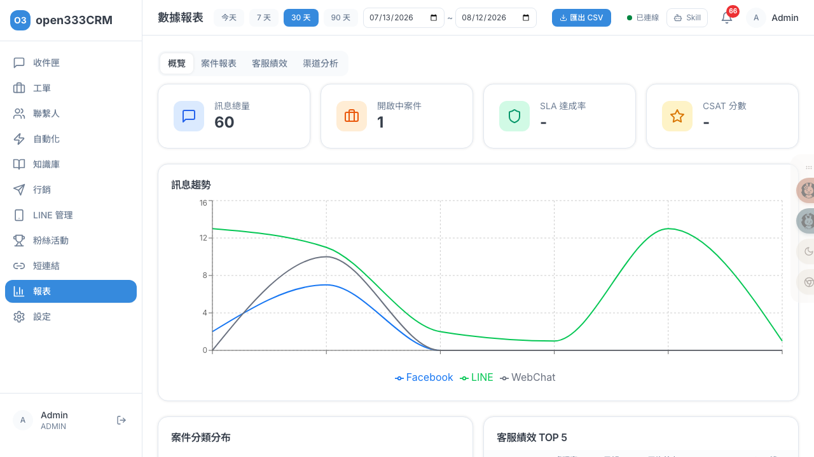
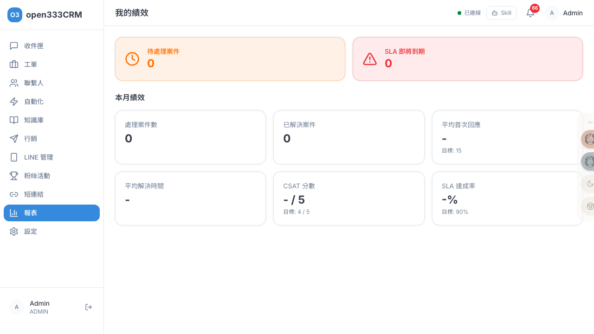

CHAPTER 10 · 分析與設定
數據報表
跨渠道的客服營運報表：訊息量、案件、SLA、CSAT、客服績效、通道分析，並可匯出 CSV。用數據看清團隊的運作狀況。
1 功能總覽
報表分「數據報表」（團隊整體）與「我的績效」（個人）兩個頁面。數據報表頁有四個分頁：概覽、案件報表、客服績效、渠道分析。
⚠️
報表需要 主管（Supervisor）以上權限才能看，一般客服（Agent）進不來。
日期範圍的重要性
右上角有日期範圍選擇器（今天 / 7 天 / 30 天 / 90 天，可自訂），預設近 30 天。大部分數字都受這個範圍影響，所以看報表前先確認範圍對不對。唯二例外是「開啟中案件」與「SLA 違規案件表」——這兩個是「當下的即時快照」，不受日期範圍影響（因為它們反映的是「現在還沒處理完的」）。
2 概覽（KPI）
「概覽」分頁上方有四張 KPI 卡，每個數字的算法都不同，理解它才不會誤讀：

| KPI | 怎麼算 |
|---|---|
| 訊息總量 | 範圍內所有訊息數（進站+出站） |
| 開啟中案件 | 當前快照：還在處理的案件數（不受日期範圍影響） |
| SLA 達成率 | 範圍內「已解決且有 SLA」的案件中，準時解決（在期限前解決）的比例；沒有可算的案件顯示「-」 |
| CSAT 分數 | 範圍內有評分案件的平均分（滿分 5.0） |
下方另有訊息趨勢折線圖（LINE / Facebook / WebChat 三通道）、案件分類圓餅圖、客服績效 TOP 5 表。
3 案件報表
「案件報表」分頁聚焦工單數據：
| 圖表 | 內容 |
|---|---|
| 案件量趨勢 | 每日「新開案」與「已解決」的長條圖 |
| 分類 / 優先級分布 | 兩張圓餅圖（沒分類的歸「未分類」） |
| SLA 違規案件表 | 當前快照：未結案且已逾期的案件，依到期排序、最多 50 筆 |
| 升級率 | 範圍內被升級的案件佔總案件的比例 |
4 客服績效
「客服績效」分頁是全部客服的績效表（只列在職客服），每一欄都可點擊排序（預設按「處理案件」由多到少），方便找出負荷高或需要協助的人。
| 欄位 | 算法 |
|---|---|
| 處理案件 / 已解決 | 該客服在範圍內被指派的案件數 / 其中已解決數 |
| 平均首次回應 | 從建立到第一次回覆的平均時間（顯示「N 分」或「H 時 M 分」） |
| 平均解決時間 | 從建立到解決的平均時間 |
| CSAT | 該客服案件的平均滿意度分數 |
| SLA 達成 | 該客服「有 SLA 且已解決」的案件中準時的比例 |
概覽頁只顯示 TOP 5，這個分頁顯示全部客服。空值以「-」顯示。
5 渠道分析
「渠道分析」分頁用四組資料幫你了解「客戶主要從哪來、Bot 分擔了多少」：
- 渠道訊息分布 / 對話數：各通道（LINE / FB / WebChat / WhatsApp）的量
- Bot vs 人工：多少對話由 Bot 處理、多少由人工處理——衡量自動化程度
- 各渠道新聯絡人數：範圍內各通道新增的客戶數
6 匯出 CSV
右上「匯出 CSV」會依當前所在分頁匯出對應報表，下載成 {類型}_report.csv：
| 在哪個分頁 | 匯出內容 |
|---|---|
| 概覽 | 概覽各指標的鍵值 |
| 案件報表 | 逐案明細（ID、標題、狀態、優先級、分類、指派客服、聯繫人、建立/解決時間、CSAT） |
| 客服績效 | 各客服的績效數字 |
| 渠道分析 | 各渠道的訊息數、對話數 |
CSV 是 UTF-8 編碼，可用 Excel 開啟做進一步分析或存檔。
7 我的績效
「我的績效」是客服個人的本月績效面板（左側選單 → 報表 → 我的績效），讓每位客服看自己的表現與待辦。

上方兩張即時告警卡：待處理案件、SLA 即將到期（30 分內）——提醒自己該先處理什麼。下方 6 張本月指標卡，達標顯示綠勾、未達標顯示黃三角：
| 指標 | 目標 |
|---|---|
| 處理案件數 / 已解決案件 | 越多越好 |
| 平均首次回應 | 15 分內（越低越好） |
| 平均解決時間 | 越低越好 |
| CSAT 分數 | 4.0 / 5 以上 |
| SLA 達成率 | 90% 以上 |